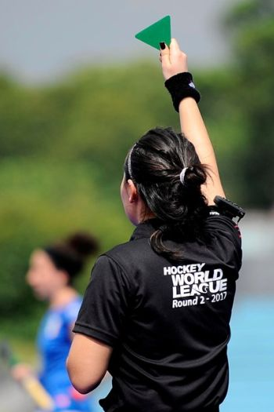

Estas son las Reglas Básicas del Hockey Hierba o Césped: A pesar de la popularidad con la que cuenta en algunos países, el Hockey sobre Césped en España pasa sin pena ni gloria. Nos atreveríamos a decir que un buen porcentaje de «amantes del deporte» sólo lo ven de pasada durante los Juegos Olímpicos, y si juega la Selección Española.
Pero nos resistimos a pensar que es desinterés y nos inclinamos por la falta de oportunidades para seguirlo. Incluso por algo de desconocimiento de las reglas.
Aunque no es el deporte más complicado de entender, es cierto que algunos términos pueden causar confusión. Penalty Stroke, Penalty Corner, Shoot-Out… Normal que te puedas hacer un lío.
Pero para eso estamos aquí, para ayudarte a deshacerlo y a entender este deporte de manera sencilla. Con un poco de suerte crecerá lo suficiente como para que la próxima Mejor Jugadora de la Historia en Hockey Hierba salga de nuestro país.
¿Qué es el Hockey? ¿Cuántos tipos de Hockey existen?: Básicamente podemos decir que el Hockey es un deporte que enfrenta a dos equipos, cuyo objetivo es introducir una bola o puck en la portería contraria. Lo que hace característico a este deporte, es que el control de dicha bola se realiza mediante un «Palo de Hockey», también conocido como «Stick». La pelota no puede tocarse con manos ni pies.
Existen distintas modalidades de Hockey, aunque las más conocidas son:
Hockey Hielo.
Hockey Césped.
Hockey Sala.
Hockey Patines.
Además, existen otros tipos de Hockey menos conocidos, como el Hockey Subacuático, el Hockey Playa o el Hockey de Aire.
Este artículo lo centraremos en el Hockey sobre Césped o Hockey Hierba.
Origen del Hockey: La creación del Hockey se atribuye al indio Naveen Gali y, su introducción en Europa, a los colonos británicos. Sin embargo, existen representaciones gráficas con más de 4.000 años de antigüedad que muestran a dos personas golpeando una pelota con palos.
Pero como del Origen y la Historia del Hockey ya hablamos en su día, mejor te dejamos el enlace para que le des un vistazo.
Reglas del Hockey sobre Césped o Hockey Hierba: Junto con el Hockey Hielo, el Hockey Césped seguramente es el más conocido. A ello contribuye el hecho de haber estado presente en casi todas las ediciones de los Juegos Olímpicos Modernos. La competición femenina se incluyó a partir de Moscú 1980.
Aun así, repasaremos sus principales reglas para que no te quede ninguna duda en el próximo partido que veas.
¿Cómo es el Campo de Juego?: La cancha de Hockey Césped mide 91,4 x 55 metros y está dividida en dos mitades. Como en la mayoría de deportes, las líneas cortas que delimitan el terreno de juego (y sobre las que se asientan las porterías) se denominan líneas de fondo. Las líneas más largas, laterales o bandas.
Además de las líneas delimitadoras y la central, hay una línea más en cada mitad del campo. Se sitúa a 22,9 metros desde la línea de fondo y es conocida como línea de 23 metros. Limita distintas acciones, como por ejemplo, hasta donde puede adelantarse el portero. La parte de campo entre esta línea y la de fondo es habitualmente denominada zona de 23 metros.
Cada portería tiene enfrente dos áreas. La más pequeña, a 14,63 metros desde la portería, tiene funciones muy importantes dentro del juego:
Delimita la zona donde el portero tiene reglas específicas.
Sólo las pelotas que hayan sido golpeadas dentro de ella pueden ser gol.
Las faltas de los defensas que se produzcan en ella son sancionadas, según el caso, con penalty corner o penalty stroke.
El área más grande está dibujada con una línea discontinua, a 5 metros de la pequeña.
Por último, el punto de penalty está a 6,4 metros de la línea de portería.
En cuanto a la superficie, originalmente se utilizaba césped natural, de ahí que también se conozca como Hockey Hierba. Pero desde los años 70 se ha ido imponiendo el césped artificial, que reduce la fricción y el bote de la pelota. Esto ha hecho el juego más rápido y preciso.
Actualmente están muy difundidos los campos con base de agua. Estos mejoran mucho el deslizamiento de la bola. Sin embargo, son muy caros y necesitan un alto consumo de agua. Por ello, se están buscando soluciones alternativas con las mismas prestaciones, pero con menor coste e impacto ambiental.
¿Cuántos jugadores hay en un partido de Hockey Césped?: Cada equipo puede estar compuesto por un máximo de 18 jugadores. De estos, sólo 11 pueden estar sobre el terreno de juego (1 portero + 10 jugadores de campo).
El portero se diferencia del resto de componentes del equipo:
Puede tocar la pelota con cualquier parte del cuerpo.
Lleva camiseta de otro color y equipación especial para impedir ser lesionado por el golpe de una pelota.
No puede sobrepasar la línea de 23 metros. Si sale del área de 15 metros, debe comportarse como cualquier otro jugador de campo y cumplir las mismas reglas.
Si un portero es lesionado o expulsado, cualquier jugador de campo puede tomar su lugar. Para ello, se equipará con la misma indumentaria y a partir de ese momento, pasará a cumplir las mismas reglas.
Para el resto de jugadores, los principales puntos a destacar son:
Sólo pueden golpear la bola con la parte plana del stick, los bordes de la cabeza (zona curvada) y el mango.
No pueden tocar la pelota con manos ni pies. No obstante, si un jugador toca la bola con el pie, pero no obtiene ventaja, el juego continúa.
Están prohibidos los empujones y obstrucciones tanto con la posesión como cuando se busca recuperar la pelota.
En ningún momento puede haber más de dos jugadores tocando la bola con su stick. Si un tercer jugador interfiere se denomina «tercero».
Cualquiera de estas infracciones supone la pérdida de posesión a favor del equipo contrario.
Durante un partido, cada equipo puede hacer tantas sustituciones como quiera y en el momento que considere oportuno. La única excepción es tras la concesión de un penalty corner. En ese caso, no puede haber cambios hasta que no se haya ejecutado. Sólo el portero, en caso de lesión o expulsión, puede ser sustituido en ese periodo de tiempo.
¿Qué equipación se utiliza?: Los jugadores de campo y el portero cuentan con diferentes equipaciones. Los primeros no usan indumentaria específica más allá de espinilleras y protector bucal. Los segundos, por el contrario, están protegidos por casco integral con rejilla para la cara, coderas, guantes, protectores de piernas y coquilla.
Durante los penalty corner, los defensores que se sitúan tras la línea de fondo se colocan momentáneamente máscara y guantes.
Todos ellos deben llevar zapatillas adecuadas para hierba artificial y así evitar resbalones y lesiones.
Stick de Hockey Hierba
El stick o palo de Hockey Césped tiene la parte inferior curvada, dándole cierto aspecto de gancho. Es la zona que se denomina «Cabeza». Esta cuenta con la cara izquierda plana y la derecha curvada. Sólo se puede controlar la pelota con la primera.
La longitud del stick de Hockey Hierba varía según la altura del jugador, pero no puede superar los 105 milímetros. El peso límite es de 737 gramos y como máximo puede tener 51 milímetros de grosor, incluyendo cualquier cinta protectora o publicitaria que se añada. Cuenta con una ligera curvatura lateral que le proporciona mayor ergonomía.En cuanto a los materiales con que se fabrican, son muy habituales la madera, la fibra de vidrio, la fibra de carbono y diversas combinaciones de estos dos últimos. Según con cual estén elaborados, los precios serán más altos o más bajos.
Aquí puedes ver distintos modelos de Sticks de Hockey.
Pelota
Antiguamente, las bolas de Hockey Hierba estaban fabricadas en cuero y corcho, pero actualmente son de plástico y huecas por dentro. El grosor del material es de 1 centímetro y tienen un perímetro de entre 224 y 235 milímetros. El peso debe oscilar entre los 156 y 163 gramos.
Debe ser preferiblemente blanca o de un color que contraste claramente con la superficie de la pista. Son muy habituales las pelotas amarillas porque facilitan la visión de los espectadores.
¿Cuánto dura un partido de Hockey Césped?: Un partido está compuesto por dos periodos de 35 minutos con un descanso de 5. No obstante, algunos torneos internacionales usan un formato de 4 cuartos. Estos son de 15 minutos cada uno con descansos de 2. Entre el segundo y tercero, un intermedio de 15. En ambos casos, si al finalizar el tiempo reglamentario el árbitro señala una sanción, esta puede ejecutarse igualmente.
El tiempo de juego se detiene durante los lanzamientos de penalties, revisiones de vídeo y cualquier otra situación que pare el partido de manera significativa.
En general, está permitido que un partido termine con el marcador igualado. Sin embargo, en competiciones donde es necesaria la eliminación de uno de los equipos, el desempate se produce por shoot-out.
Árbitros: Un partido de Hockey sobre Césped cuenta con 2 árbitros que controlan el juego y se encargan de aplicar el reglamento. Suelen estar apoyados, fuera del campo, por un cronometrador y un anotador.
En las competiciones de alto nivel (Mundiales, Juegos Olímpicos, etc.) también aparece la figura de los árbitros de vídeo. Estos están en una sala donde pueden revisar las imágenes de cualquier jugada polémica. Se comunican con los árbitros de campo a través de radio.
Cuando existe este videoarbitraje, cada entrenador cuenta con una reclamación a lo largo del partido. En caso de que le den la razón, la mantiene y puede volver a pedir una revisión. Sólo se puede utilizar en jugadas específicas como la concesión de goles, penalty stroke, penalty corner y dentro de la zona de 23 metros.
Sanciones: La mayor parte de las infracciones durante un partido de Hockey sobre Césped son leves y conllevan la pérdida de posesión. Sin embargo, existen situaciones donde esto no es suficiente y además de un castigo en el juego, puede traer consigo una sanción para el propio jugador.
Ante faltas leves, el jugador puede ser sancionado mediante una tarjeta triangular verde que implica 2 minutos de suspensión.
Si existe reiteración o la falta que se produce es más severa, la sanción puede alcanzar los 10 minutos. Se señala con una tarjeta amarilla.
En ambos casos, el jugador castigado debe permanecer en un área designada. El tiempo de sanción puede alargarse si, a criterio de los árbitros, se produce mala conducta durante la misma.
Ante situaciones graves, la expulsión puede ser definitiva, obligando al jugador a abandonar el campo y sus alrededores. Este tipo de castigo se indica mediante una tarjeta roja redonda.
Todas las sanciones conllevan que el equipo juegue con un integrante menos durante el tiempo que duren, incluyendo la expulsión por el resto del partido.

Jugadas habituales del Hockey sobre Césped: Durante un partido de Hockey Hierba se producen una serie de jugadas que tienen sus propias características. Estas son:
Saque lateral
Se produce cuando la pelota cruza completamente una de las líneas laterales del campo. El equipo que no la tocó en último lugar, ejecuta este saque desde el punto por el que la bola salió de la cancha.
Todos los jugadores deben estar colocados al menos a 5 metros y, el jugador que saca, puede decidir entregar la pelota a un compañero o hacer un autopase.
Si la bola salió en algún punto entre la línea de 23 metros y la línea de fondo, el saque no puede meterse directamente dentro del área. Para hacerlo, el sacador debe recorrer previamente 5 metros con la pelota, hacer un pase a otro compañero o que un contrario toque la bola.
Si la bola sale por la línea de fondo
Cuando un atacante lance la pelota fuera, a través de la línea de fondo, el juego se reinicia con un golpe franco a favor del equipo defensor. Se ejecuta desde un punto a 15 metros de la línea de fondo y enfrente del punto por donde salió la bola.
Si es un defensor o el portero quien la manda fuera, entonces el partido se reanuda con un golpe franco desde la línea de 23 metros. La pelota debe colocarse enfrente del punto por el que salió.
En caso de que un defensor envíe fuera la bola intencionadamente, entonces el juego prosigue con un penalty corner.
Penalty Stroke
Es la pena máxima que puede aplicarse en Hockey Hierba. Se utiliza para sancionar 2 tipos de faltas de un defensor en el área. Una intencionada sobre un oponente con posesión de la bola y otra que impida un previsible gol.
Para ejecutarlo, el lanzador se coloca sobre el punto de penalty. Tras la señal del árbitro, lanza la bola, generalmente levantándola, para intentar superar al portero.Penalty Corner o Córner Corto
También se utiliza para sancionar faltas de un defensor dentro del área. Una intencionada sobre un rival que no tenga la bola y otra que no evite la probable consecución de un gol.
De igual manera, sanciona cualquier falta intencionada cometida por un defensor dentro de la zona de 23 metros.
Seguramente su ejecución es una de las partes más complicadas de entender para los recién llegados al Hockey sobre Césped:
Para ejecutarlo, la bola se coloca sobre la línea de fondo a 10 metros de la portería. El sacador debe tener al menos un pie fuera de la línea.
El resto de atacantes debe permanecer al borde del área hasta que se produzca el saque.
El portero y 4 defensores pueden colocarse detrás de la línea de fondo, incluso dentro de la portería, para impedir el gol.
Los defensores restantes deben permanecer al otro lado de la línea central del campo.
Tras la señal del árbitro, el sacador golpea la pelota hacia el interior del área desde donde el resto de compañeros juegan para buscar el gol. Para que sea válido, la pelota tiene que salir del área en algún momento entre el saque y el gol.
En el primer tiro a puerta, la pelota no puede sobrepasar la altura de las tablas de la portería (46cm). En caso de rebote, los tiros posteriores sí pueden elevarse en las mismas condiciones que el resto del juego.Golpe Franco
Se otorgan ante infracciones cometidas fuera de las áreas y se ejecutan desde el mismo punto donde se produjo la falta.
Todos los jugadores deben estar al menos a 5 metros de distancia de dicho punto y el sacador puede elegir entre hacer un pase o jugar la pelota en cualquier dirección. Si el saque se hace una vez sobrepasada la línea de 23 metros, no puede ir directamente al área, igual que ocurría en el saque lateral.
Shoot-Out
En caso de que un partido termine en empate y sea necesaria la eliminación de uno de los equipos, se procede a una tanda de 5 shoot-out.
Sólo participan en la jugada el portero y el lanzador. Este último sale desde la línea de 23 metros sobre la que está colocada la pelota, justo enfrente de la portería.
No necesita disparar directamente a puerta, sino que dispone de 8 segundos para jugar la bola, acercarse tanto como pueda y ejecutar el lanzamiento. El portero, por su parte, también puede adelantarse y desplazarse por todo el área para evitar el gol.
Toda la jugada es controlada por dos árbitros más otro que sólo se ocupa de cronometrar el tiempo y está de espaldas a la cancha.
Finalmente gana el equipo que más tantos haya marcado. En caso de producirse un nuevo empate, se continúa ejecutando disparos hasta que uno de los equipos falle.Como te decíamos al principio, no es un deporte complicado y seguro que si antes no lo tenías claro, ahora nos das la razón.
Pero dinos… ¿Eres de los que sólo ve Hockey Césped durante los Juegos Olímpicos o lo sigues siempre que puedes? ¿Conoces a alguien que lo practique? ¿Te animarás ahora a seguirlo más frecuentemente? Cuéntanos lo que quieras en la zona de comentarios. Estaremos encantados de leerte ??